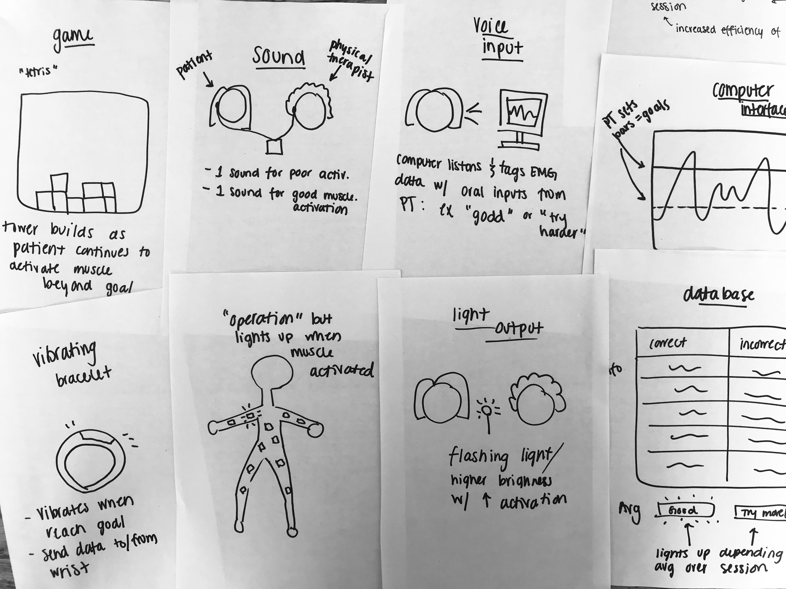
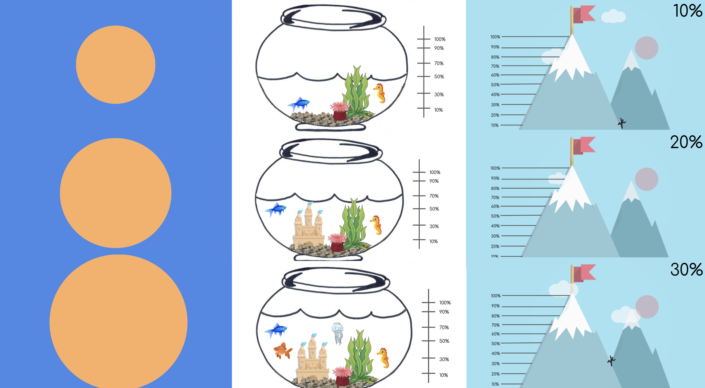

Curl Coach
Role
Design Thinker
Date
Winter, 2018
Skills
UX, UI, Product Management
About
Curl Coach is an interactive therapy aid that I designed for a client at the Shirley Ryan AbilityLab in Chicago. During this ten week project, my team worked closely with physical therapists and stroke survivors to design an interface that could help make EMG sensor data easier to understand during a PT session. In my role on this project, I learned rapid prototyping, conducted interviews and observations, and managed tasks for my team.
Helping physical therapists track patient improvement
Physical therapists of stroke survivors at the Shirley Ryan AbilityLab expressed difficulty parsing the large amounts of raw data collected during therapy sessions when using EMG sensors to measure muscle activation.
EMG data are valuable but confusing.
Physical therapists wanted a clear visualization of EMG sensor data to track their patients' muscle progress in real time and easily convey that information to their patients without asking a doctor.
EMG Pain Points
Time: Physical therapists have to send the data to doctors to be analyzed. This can take days.
Confusion: Patients have no clear indication of their progress within the therapy session.
Morale: The raw EMG data and lack of real time feedback is demotivating for patients and PTs.
Brainstorming
My team visited Shirley Ryan AbilityLab to interview patients, physical therapists, doctors, and observe a handful of physical therapy sessions. We then began the first round of brainstorming.
Idea Dump
Calling and interviewing to inform low-fi prototype
After more calls and interviews with the PTs at Shirley Ryan, team discussion, prototyping and sketching, we built a low fidelity prototype to test with users at Shirley Ryan.
First Prototype Sketch

Gamifying EMG Data
Our initial prototype was effective, but wasn't enough to engage patients and distract them from the difficulty of therapy sessions. In such a clinical setting, a small watch screen wasn't enough to transform the patient's experience.
We started to think more about how we can make physical therapy engaging. Could we gamify PT sessions and EMG data? We knew that patients "need something to distract them" and tested out some interactive interfaces. We experimented with many forms of data visualization: a pulsing orange circle, water filling a fish tank, a man ascending a mountain, and more.
Gamified UI Mockups
Engaging patients without obscuring data
Our client and test users found the gamification component to our interface critical. It received a lot of positive feedback. We had to be careful about not making the interface too "fun" which might obscure important data from the view of a physical therapist who cannot spend more than a few seconds glancing at the computer screen.
Final Product
The interface includes a muscle activation meter to display the EMG signal value, a strength goal to be set by the therapist, a star collector that rewards the patient for surpassing the target, and a data analysis system offering the therapist real time statistics on the session.